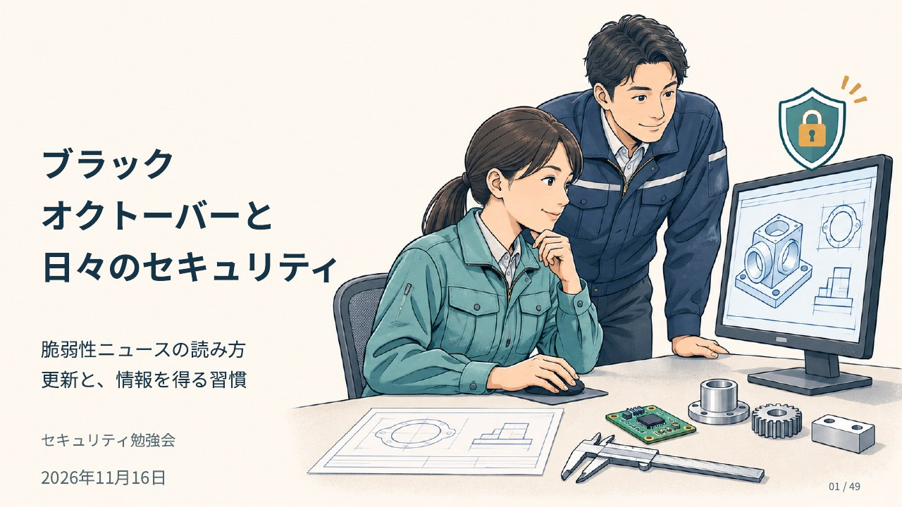
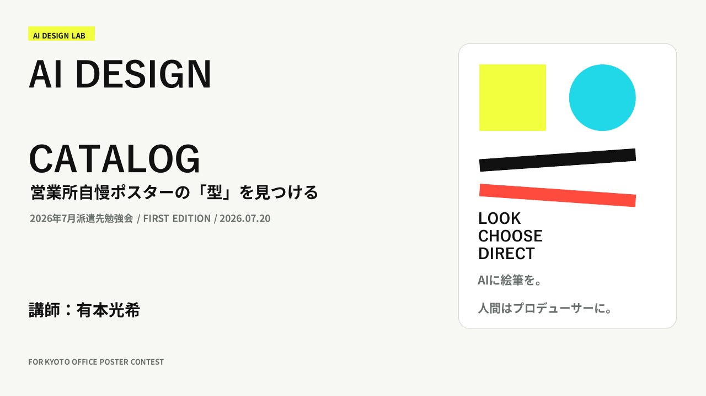

セキュリティ 2026.11.1660分49枚最新の教材 ブラックオクトーバーと日々のセキュリティ 3つの事例から、脆弱性・証明書・ニュースの読み方を学びます。私用PCの更新と、情報を自分で取りに行く習慣へ。 スライドで見る ↗PDFを開く （新しいタブ）↗ 情報確認日：2026年11月15日
AI・デザイン 2026.0733枚 AIと一緒にデザインを考える 表現の型やポスターデザインの例を通じて、AIとの対話でアイデアを広げ、伝わる見せ方を考えます。 スライドで見る ↗PDFを開く （新しいタブ）↗ 前回の教材をそのまま掲載しています。